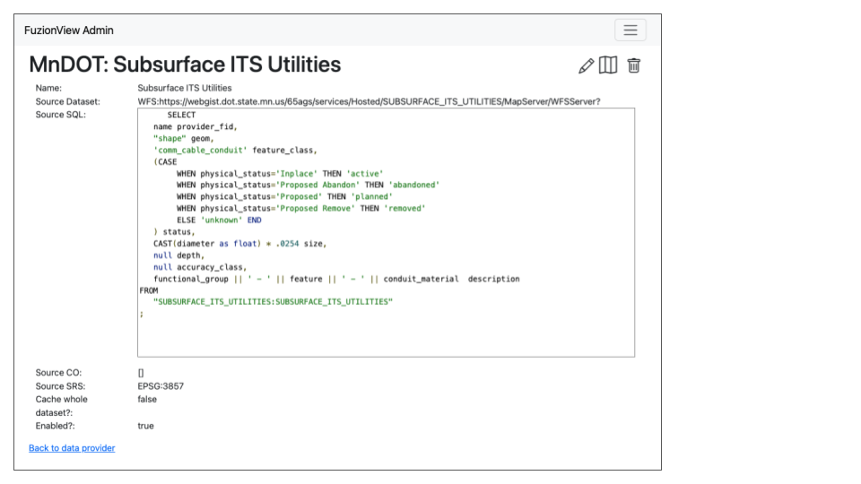
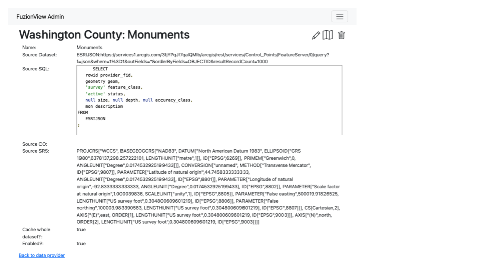
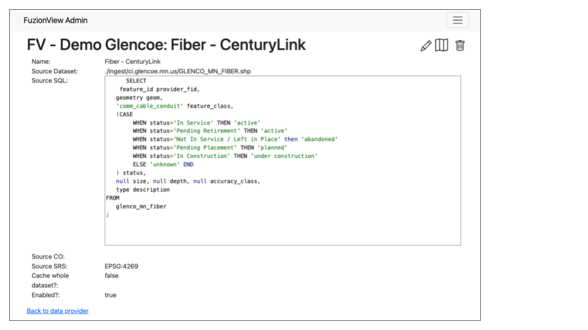

Connect to FuzionView
Review FuzionView Schema
Understand the way data is stored in FuzionView so you can map your data appropriately.
Configure Secure access
Generate an API key for programmatic access to your service.
Coordinate System
By default, the FuzionView engine stores everything as EPSG: 6344 If you are using a different coordinate system, you must inform your SharedGeo coordinator.
Connection Types
WFS is the preferred connection type, because the data will always be current. It is also the easiest to configure once the API key is available.

WSF Dataset Connection
ESRI Feature Services are also supported:

ESRI Json Dataset Connection
File upload options such as a shape file or GeoPackage are not recommended, as they would require updating on a regular basis to keep the data current.

File Upload Dataset Connection
- While not ideal, under limited conditions we may be able to support other certain other connection types We would require the following information about the connection:
Name of the dataset
Source Dataset URL
Geometry Field Name
Layer Name
Source SQL
Source CO
Source SRC (the EPSG code for the coordinate system)
Choice to cache the whole dataset or not
Choice to enable the dataset or not
Last Updated: May 19, 2025